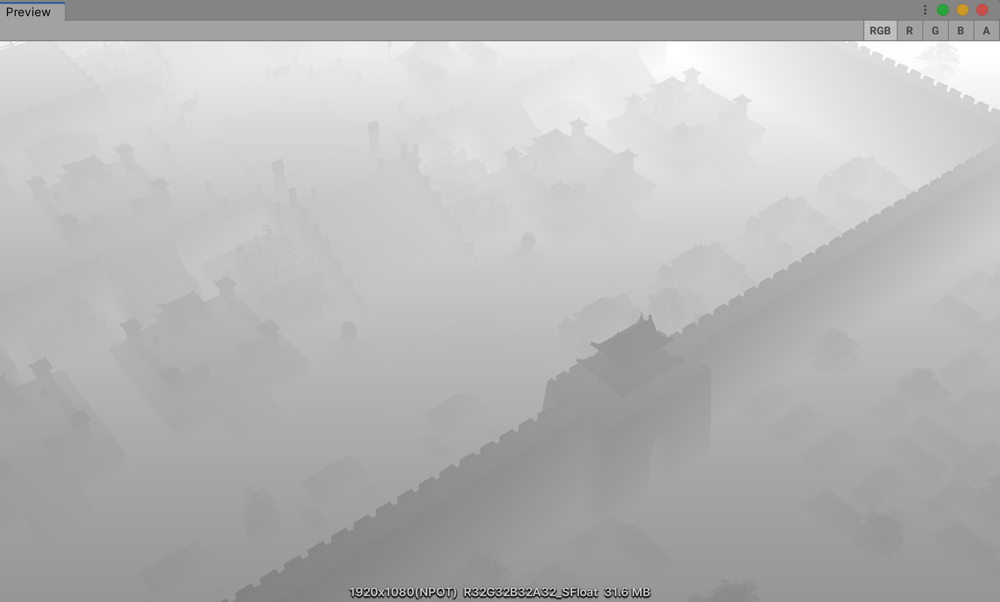

3D 场景中的动静分离
2020-7-14
众所周知，在制作 2D 的 UI 时，可以使用动静分离的方法来减少消耗。UI 动态的部分放在一个 Canvas 下，静态的部分放在另一个 Canvas 下。这样，当动态 UI 发生改变的时候，只需要 Rebuild 动态 UI 所属的那个 Canvas 即可，静态 UI 所属的 Canvas 保持不变。开销只会发生在动态 UI 发生改变时。
上述优化方法在 UI 制作中已经是很常用的方法了。那么在优化 3D 时，是否能适用呢？这里提出一种方法，类似 2D 的动静分离。
先说明下前提。有一个场景，DrawCall 和面数非常高，材质球、贴图没有做过合并处理，玩家可以控制摄像机位移、旋转，360 度查看场景，但摄像机大多数时候的位移、旋转是不变的，玩家的操作热点集中在 UI 上，场景中使用的是实时光照、实时阴影。实时光照我们会把多光源计算合并到一个 Pass 中。实时阴影意味着 DrawCall 和面数都会翻倍。
对于这样的场景，不管对于 CPU 还是 GPU 来说，渲染开销是非常大的。优化这样的场景，最好的方式是从 3D 模型和材质本身着手，减面、合并贴图、材质、烘焙 Lightmap。这一套操作下来，优化得就差不多了。但是...... :-(
因此只能另辟蹊径。根据上文的描述，操作热点大多集中在 UI 上，3D 相机虽然可以位移、旋转，但是并不是一个经常触发的操作。所以，3D 相机每帧都在渲染其实是极大的浪费。然后就很自然的想到，能不能把 3D 相机截屏一帧，直接显示一张截屏的图片即可，当 3D 相机的位移、旋转有变化时，再切换到真实的 3D 相机。
但是问题是，3D 场景中大部分都是静态模型，当并不全是，还有一些骨骼动画、顶点动画、UV 动画模型，数量并不多，起到点缀的作用。如果直接截屏的话，那么这些动画效果就都静止了，这样显然达不到要求。
随后就想到，能不能把 3D 场景中的静态物件和动态物件分离。静态物件通过截屏的方式作假，动态物件还是正常渲染。这样做伴随着一个新的问题，当把静态物件截屏后，势必要把静态物件隐藏起来，那么动态物件和静态物件之间的遮挡关系就没有了，因为静态物件隐藏后深度信息也不会被渲染到深度缓冲中了。因此，需要在隐藏静态物件之前，将静态物件的深度信息保存到一张纹理中，渲染动态物件的时候，根据这样纹理中深度信息来裁切像素。
这样一来，只要 3D 相机不发生位移、旋转，静态物件的渲染开销为零，动态物件数量本来就不多，开销也是极小的。所以最后的开销直线下降。
下面说一下代码上的细节。
3D 相机什么时候发生位移、旋转当然是可以判断出来的。在位移、旋转结束后的一帧，需要缓存相机视角下静态物件的深度信息。
// 打开深度渲染模式
GetComponent<Camera>().depthTextureMode = DepthTextureMode.Depth;
// 创建异常屏幕大小的纹理
// 实际上尺寸减半也是可以的，效果能接受
rt = new RenderTexture(Screen.width, Screen.height, 0, RenderTextureFormat.ARGBFloat);
// 创建一个 CommandBuffer
cb = new CommandBuffer();
// 拷贝深度纹理
cb.Blit(BuiltinRenderTextureType.CurrentActive, rt, mtrl, 0);
// 设置为全局，在动态物件的材质中会用到
cb.SetGlobalTexture("_DepthBuffer", rt);
// 将 CommandBuffer 挂载到相机渲染完深度之后
GetComponent<Camera>().AddCommandBuffer(CameraEvent.AfterDepthTexture, cb);以上开销只有一帧，虽然渲染压力很大，但是很感官上难察觉到。
拷贝深度纹理那一步，使用了一个自定义的材质球。实际上并不知直接像素点拷贝，而是经过处理后再输出。
struct appdata
{
float4 vertex : POSITION;
float2 uv : TEXCOORD0;
};
struct v2f
{
float2 uv : TEXCOORD0;
float4 vertex : SV_POSITION;
float4 screenPosition : TEXCOORD2;
};
v2f vert (appdata v)
{
v2f o;
o.vertex = UnityObjectToClipPos(v.vertex);
o.uv = v.uv;
o.screenPosition = ComputeScreenPos(o.vertex);
return o;
}
sampler2D _MainTex;
sampler2D _CameraDepthTexture;
float4 frag (v2f i) : SV_Target
{
float existingDepth01 = tex2Dproj(_CameraDepthTexture, UNITY_PROJ_COORD(i.screenPosition)).r;
float existingDepthLinear = LinearEyeDepth(existingDepth01);
return float4(existingDepthLinear, existingDepthLinear, existingDepthLinear, 1);
}从代码上可以看到，将深度值转换到了摄像机空间下的线性深度值再输出。为了方便测试查看，将值缩放调整，得到下面的结果。

在动态物件的材质中就可以使用这场缓存下来的深度纹理进行裁切了。
v2f vert (appdata v)
{
v2f o;
......
o.screenPosition = ComputeScreenPos(o.vertex);
......
}
fixed4 frag (v2f i) : SV_Target
{
float existingDepthLinear = tex2Dproj(_DepthBuffer, UNITY_PROJ_COORD(i.screenPosition)).r;
float depthDifference = existingDepthLinear - i.screenPosition.w;
if (depthDifference < 0)
{
clip(-1);
}
......
}
左图：正常的渲染效果
中图：不缓存深度图，原来被遮挡的部分出错了
右图：缓存深度图，原来被遮挡的部分正确显示